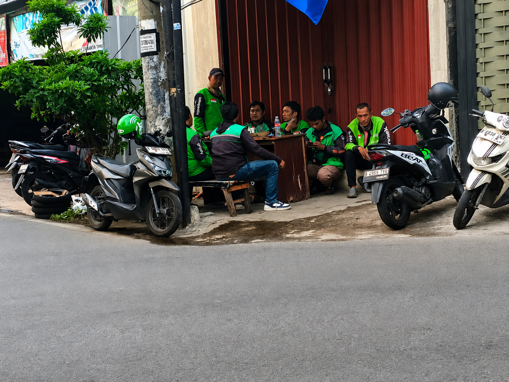

Suka
- Penghasilan datang dari usaha sendiri.
- Berinteraksi dengan banyak orang dari berbagai latar belakang.
- Menikmati kebebasan waktu dan fleksibilitas kerja.
- Mendapat banyak cerita dan pengalaman hidup.
Dari pagi buta sampai malam larut, perjalanan seorang ojek online penuh dengan tawa, lelah, dan harapan yang terus tumbuh.

Pagi hari, saya berangkat sebelum matahari terbit. Jalanan masih sepi, tapi hati sudah siap menunggu panggilan dari pelanggan. Ada yang meminta antar ke pasar, ke kampus, ke kantor, bahkan ke tempat acara malam hari. Kadang saya merasa lelah, tapi saat melihat senyum pelanggan dan menerima ucapan terima kasih, semua rasa capek itu terasa hilang. Di sisi lain, ada hari-hari saat hujan deras, tarif turun, dan pelanggan tiba-tiba tak bisa dibantu. Tapi itulah hidup: selalu ada manis dan pahit di setiap jalan yang harus dilalui.
Persiapan motor, cek bensin, lalu siap menjemput order pertama.
Cuaca panas, jalanan padat, dan banyak pelanggan yang butuh cepat.
Waktu favorit: order meningkat saat pulang kerja dan hujan mulai turun.
Lelah, tapi tetap semangat karena ada harapan untuk besok yang lebih baik.
Dua puluh cerita kecil tentang rezeki, kejutan, dan orang-orang yang ditemui di perjalanan.
Alarm berbunyi saat langit masih gelap. Order pertama mengantar seorang ibu ke pasar, dan sapaan hangatnya membuat pagi terasa lebih ringan.
Hujan turun deras ketika seorang penumpang meminjamkan payung untuk melindungi tas pengemudi. Kebaikan kecil itu menemani perjalanan sampai malam.
Seorang ayah menitipkan pesan agar anaknya tiba dengan selamat. Perjalanan singkat itu mengingatkan bahwa setiap order membawa kepercayaan.
Di ujung rute, dompet penumpang ditemukan di bawah jok. Mengembalikannya menambah waktu, tetapi wajah lega pemiliknya terasa lebih berharga.
Macet panjang membuat perjalanan terhenti. Di sela suara klakson, pengemudi berbagi cerita dengan pedagang minuman yang rutin ditemui.
Obat dan bubur hangat diantar ke rumah kecil di ujung gang. Nenek penerima pesanan mendoakan perjalanan itu sebelum pintunya tertutup.
Mesin tiba-tiba mati saat jam sibuk. Bantuan dari pengemudi lain membuat motor kembali menyala dan menunjukkan arti solidaritas.
Percakapan tentang kampung halaman berlanjut menjadi pertemanan. Tidak semua pertemuan berakhir ketika tujuan sudah sampai.
Seorang penumpang hampir ketinggalan kereta. Dengan rute yang tenang dan komunikasi yang jelas, ia tiba tepat waktu.
Pesanan di gang sempit itu membawa pelanggan baru dari rekomendasi tetangga. Rezeki kadang bersembunyi di jalan kecil.
Seorang warga menawarkan kopi ketika pengemudi berteduh. Lima menit istirahat cukup untuk mengembalikan tenaga.
Order terakhir membawa makanan ke keluarga yang baru pulang kerja. Rasa lelah berkurang saat melihat mereka bisa makan bersama.
Keselamatan menjadi perhatian utama ketika membawa penumpang anak. Perjalanan berlangsung pelan, hati-hati, dan penuh obrolan.
Satu belokan keliru membuat rute lebih panjang. Permintaan maaf dan kesabaran akhirnya mengubah salah arah menjadi cerita lucu.
Notifikasi tidak seramai biasanya. Meski pendapatan sedikit, hari itu dipakai untuk mengecek motor dan berbincang dengan keluarga.
Kotak kue dijaga agar tidak miring di sepanjang jalan. Ketika lilin dinyalakan, pengemudi ikut tersenyum.
Angin malam membuat penumpang kedinginan. Jaket cadangan diberikan, lalu dikembalikan bersama ucapan terima kasih.
Perjalanan menuju rumah di seberang sungai membuka pemandangan kota dari sisi yang jarang terlihat.
Setelah berjam-jam di jalan, target akhirnya tercapai. Rasa mampu bertahan membuat hari itu berarti.
Motor diparkir, jaket digantung, dan penghasilan dihitung. Besok mungkin penuh tantangan, tetapi harapan selalu ikut pulang.
"Bekerja sebagai ojek online bukan hanya soal mengantar orang, tapi juga menembus hari demi hari dengan semangat yang tak mudah padam."